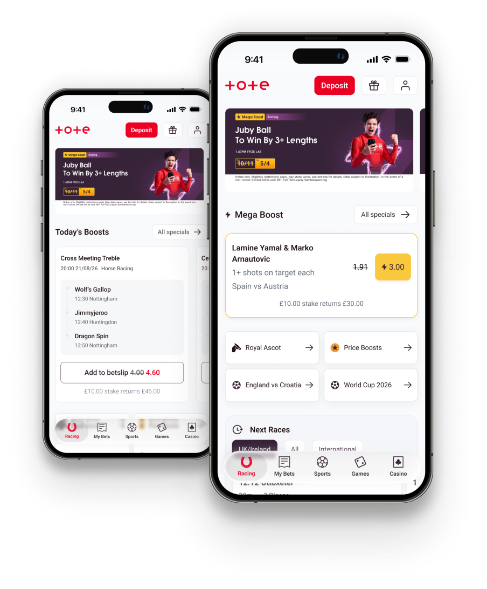
Sportsbook Navigation
Introduced a data-led approach to our sportsbook product, where I benchmarked the existing experience and identified a significant drop off between the homepage and sports page. Analysis showed awareness as a key factors for customers not betting with the Tote sportsbook. A/B testing showed that the sportsbook widget cohort reduced their number of bets by 3.9%, which informed us not to push to 100% despite stakeholder pressure.
- Benchmarked the existing experience.
- Surveyed customers to identify pain points and present to stakeholders.
- Communicated with stakeholders where we can make the biggest impact to the funnel with very limited resource.
- Collaborated with engineers to reuse existing functionality from a different part of the website to create a cross-sell widget.
- Established KPI and definitions of success to measure the cross-sell against.
- Presented a long term homepage strategy to pivot towards a cross product offering.
The Problem
- Sportsbook average spend per user is below target.
- Customers can’t find our sportsbook markets.
- There is no back-end resource and our current sportsbook providers is a hard coded third party with limited integration functionality.
Goals & Success Metrics
Research & Discovery
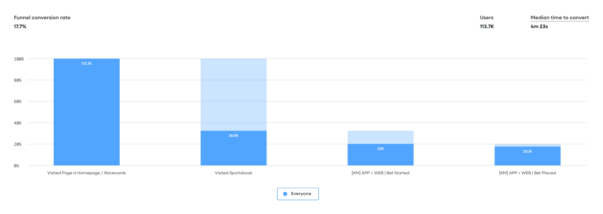
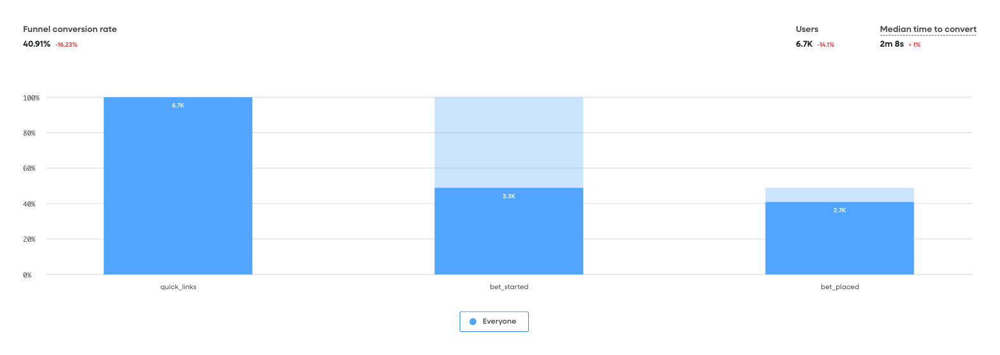
Stakeholder: “Why should I care about conversions when I know our betslip is not up to standard?”
I showed how the sportsbook betslip converted at 77%, meaning we were reasonably happy with it’s performance, especially against the cost imposed by the third party to make any improvements due to the hard coded nature of their platform.
My approach was to introduce more customer research methods to increase buy in to the findings:
- Customer Survey with 798 responses.
- Behavioural data report, covering all sportsbook customer journey’s conversion rates.
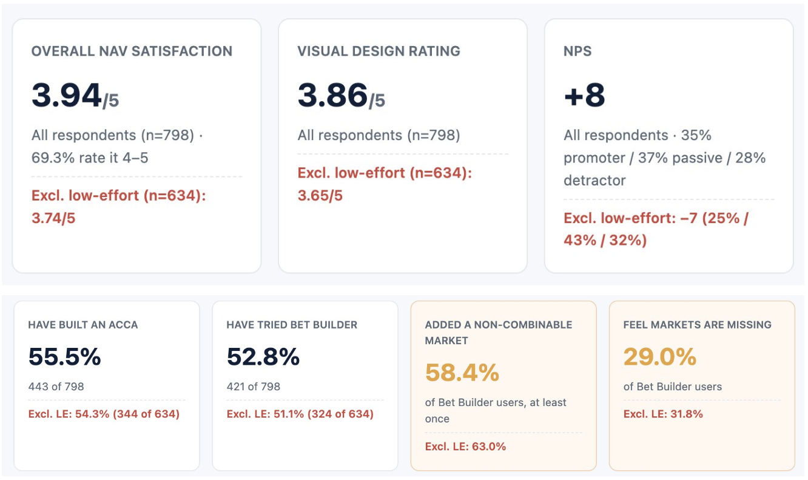
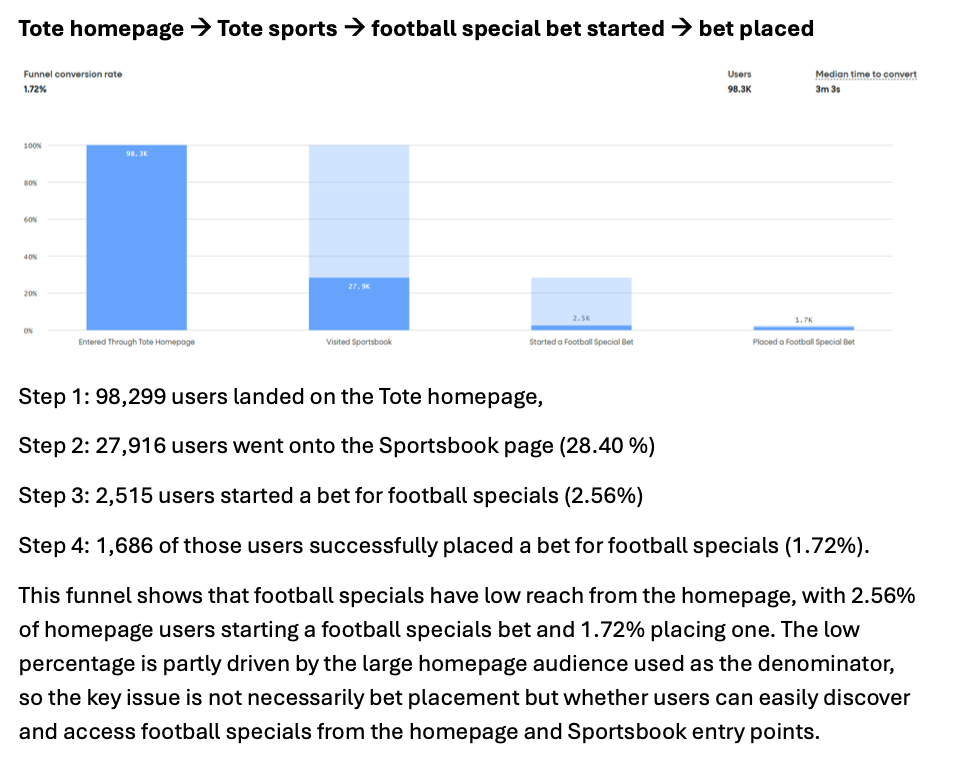
Hypothesis
Improving customer awareness of sportsbook markets by displaying markets on the homepage will increase the number of bets placed on the sportsbook.
Exploration
Designing with limited development support
There was no backend developers available, so any improvements had to be made with existing functionality. I knew there was a cross-sell component on the bet receipt but it was hidden from customers as they had to make a purchase and then scroll down the page to see it. I believed we could move this functionality from the receipt to the homepage to improve customer awareness.
Pros
- Existing cross-sell functionality exists and converts at 67%.
- Our operations team will have control over what markets customers see.
Cons
- There is an unnecessary extra step for customers as the CTA takes them to the sportsbook page rather than straight to the betslip.
- It is difficult to track customer drop offs when on the sports page because there is limited behavioural tagging in our partner’s product.
Stage 1
- Explored wether to display a singular boost or by having several. The issue with having several listed was that it would be pushing content further beneath the scroll.
- Stakeholders suggested adding £10.00 stake returns X amount, as based on their experience it increases the customer’s stake amount.
- Biggest feedback was to concentrate on cross selling bet builders rather than the mega boost, as there was significant investment in the former whereas the latter is a loss-lead.
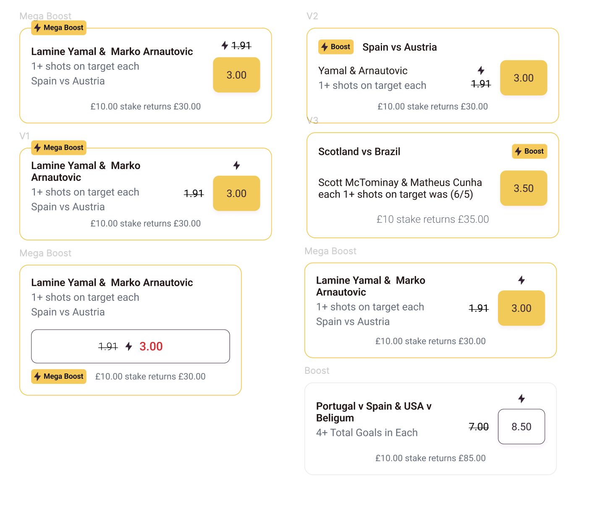
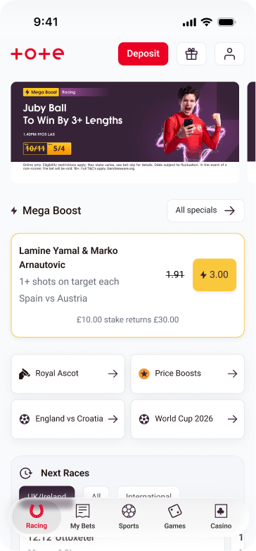
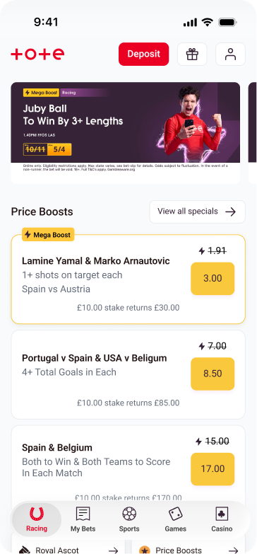
Stage 2
- Pivoted to a card with a horizontal scroll, which are common place in the industry.
- Explored multiple formats and landed on one that I felt was most scaleable and can be used more multiple bet types
- Changed from the yellow cta to our secondary buttons, as our yellow brand guidelines says it should only be applied when there is a promotion or a special offer to our customers.
- Discussion with our operations teams meant that bet builders were not technologically available. We pivoted and gave full control to the ops team whereby they can customise the title and build their own bets rather than using the third party feed.
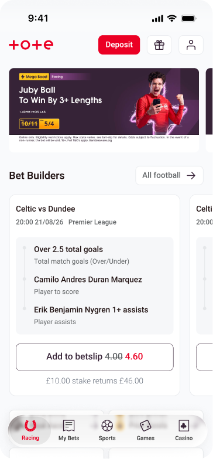
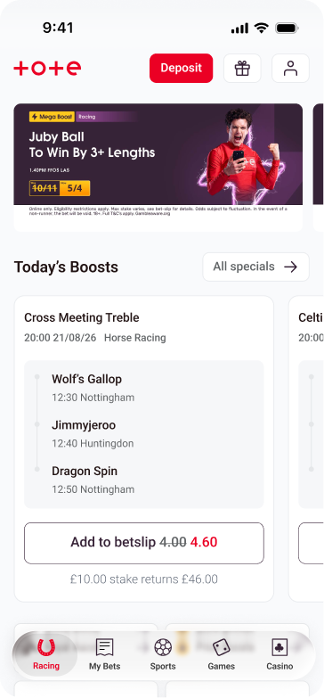
Validation
Conducted an A/B test where our sportsbook customers (defined by placing a bet on the sportsbook within the past month) were split 50:50, with group A seeing the widget once they had logged in. There was overall 14,000 customers involved in the experiement. The key success metrics were:
- No. of sportsbook bets placed
- Avg. stake
Results
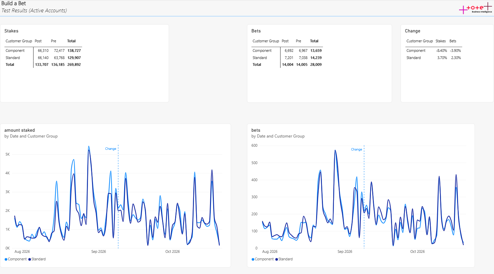
Customers who saw the cross-sell component had a decrease in number of bets by 3.9% and a decrease in stake size by 8.40%.
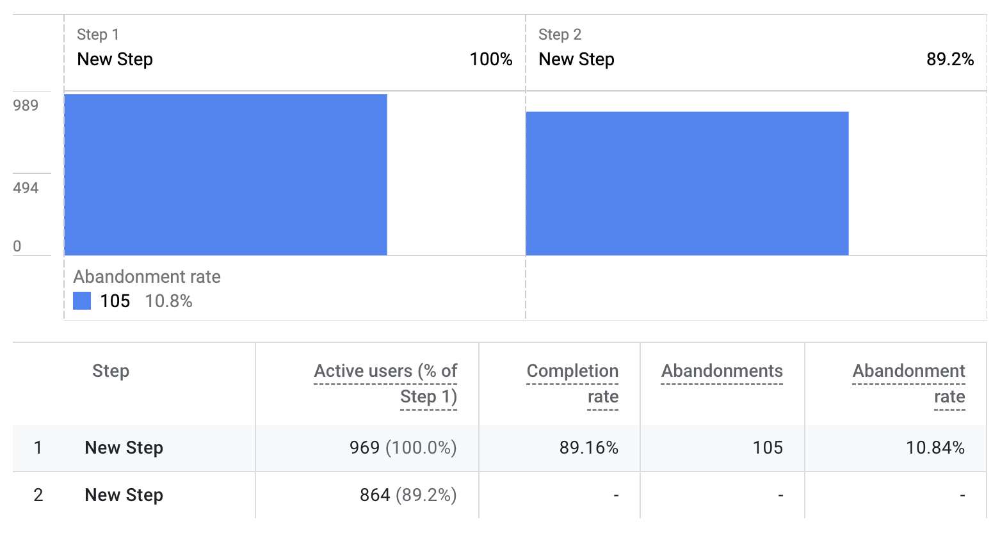
Bet placed conversion rate for the component is 89.2%.
Reflections and Learnings
Customer needs vs business goals
The mega boosts are more popular with customers than what the end product of the widget became. The commercials behind the decision was the profit margins for accumulators were far greater than the ‘megaboost’ so that is what we want customers to bet on.
However, the A/B test shows that customers rejected using the bet types that we surfaced for them, as they did not align with their goals.
Fail faster
Overall, the development work was completed within two weeks, however if we had leveraged AI into creating a workable prototype that could have been shared with a focus group, we may have got more insight into what customers wanted to see on the homepage.
Data led approach
Stakeholders wanted to invest a lot of resources into the betslip, when in fact the biggest drop off was earlier in the funnel. Using a data led approach allowed me to influence the roadmap and get buyin to the customer research proposals rather than stakeholder assumptions. Furthermore, despite the result of the A/B, stakeholders wanted to roll out to 100%, to which I responded with the data to suggest more consideration around our next steps.
Next Steps
Personalisation
The functionality of the cross sell widget performs highly, but the content we are displaying in front of the customers are not working.
Based off customer historical betting behaviour, surfacing bets that are appealing to them would increase engagement, otherwise we are displaying irrelevant content to customers.
Learn more about our Sportsbook Customers
We looked to increase bet-builder bets, however with the fact that the Tote has an older demographic than competitors may attribute to why 45% of customers do not bet on bet builders as they are not interested in the bet, rather than them not being able to find the bet type.
Further testing
Look at cross-selling the mega boosts rather than the bet boosts/specials that are currently being surfaced.
Explore further testing a list layout rather than a card layout.
Interview sportsbook customers to understand better their behaviours and opinions when using the Tote to place a sports bet.